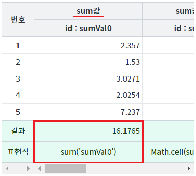
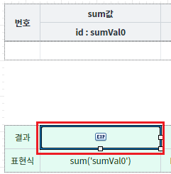

GridView의 Footer영역에 컬럼의 합계를 올림, 반올림, 내림 적용하여 출력하는 예제입니다. WebSquare에서 제공하는 함수와 Math 객체의 함수를 혼용하여 사용하는 방법을 확인할 수 있습니다.
합계 올림하기 - Math.ceil
합계 버림하기 - Math.floor
합계 반올림하기 - Math.round
합계 고정 소수점 반올림하기 - toFixed
STEP 1. 각 컬럼의 푸터(Footer)의 '결과'와 '표현식'을 확인합니다.
그림 1.브라우저(Chrome) 실행 예시

sum값 : 컬럼 합계
결과 : 16.1765
sum값(올림) : 컬럼 합계 소수점 1번째 자리 올림
결과 : 17
sum값(버림) : 컬럼 합계 소수점 1번째 자리 버림
결과 : 16
sum값(반올림) : 컬럼 합계 소수점 1번째 자리 반올림
결과 : 16
sum값(소수점 2자리 반올림) : 컬럼 합계 소수점 3번째 자리 반올림
결과 : 16.18
GridView의 푸터 컬럼의 속성을 정의합니다.
[필수] inputType="expression" //컬럼의 유형 선택. 표현식을 사용하기 위한 설정
[필수] dataType="number" //표현식에 맞는 데이터 유형 지정
[필수] expression="표현식" //표현식
예시 1) 'sumVal1' 컬럼의 합계를 올림합니다.
expression="Math.ceil(sum('sumVal1'))"
예시 2) 'sumVal2' 컬럼의 합계를 버림합니다.
expression="Math.floor(sum('sumVal2'))"
예시 3) 'sumVal3' 컬럼의 합계를 반올림합니다.
expression="Math.round(sum('sumVal3'))"
예시 4) 'sumVal3' 컬럼의 합계를 3번째 소수점을 반올림합니다
expression="Number(sum('sumVal4')).toFixed(2)"
그림 2.웹스퀘어5 SP5 스튜디오의 Design 탭 예시 - 푸터 컬럼 선택

[footer column] inputType
[footer column] dataType
[footer column] expression
[웹스퀘어5 SP5 개발 가이드] GridView
링크 : http:// https://docs1.inswave.com/sp5_user_guide/86bdcf48029b958b
[웹스퀘어5 SP5 개발 가이드] GridView의 Subtotal & Total
링크 : https://docs1.inswave.com/sp5_user_guide/86bdcf48029b958b#225a95e2231b4147
[웹스퀘어5 SP5 개발 가이드] GridView의 Footer
링크 : https://docs1.inswave.com/sp5_user_guide/86bdcf48029b958b#29124ba57ecffda4